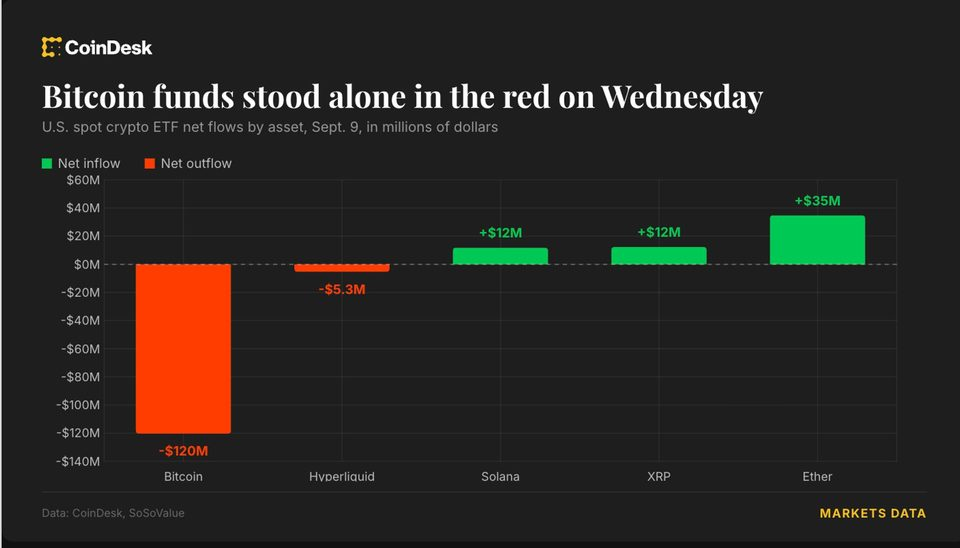
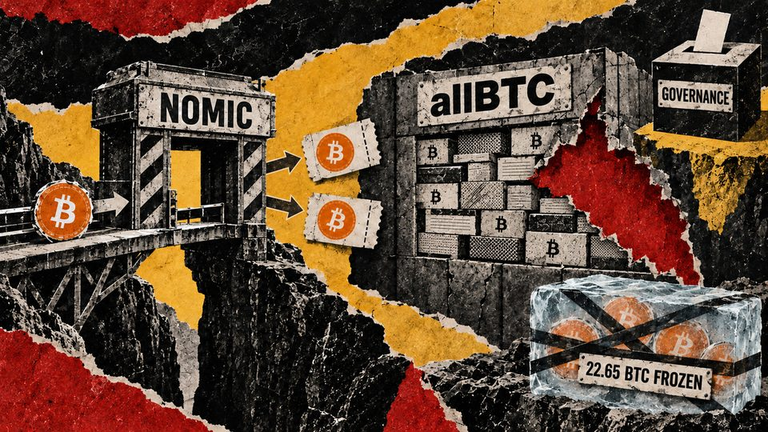
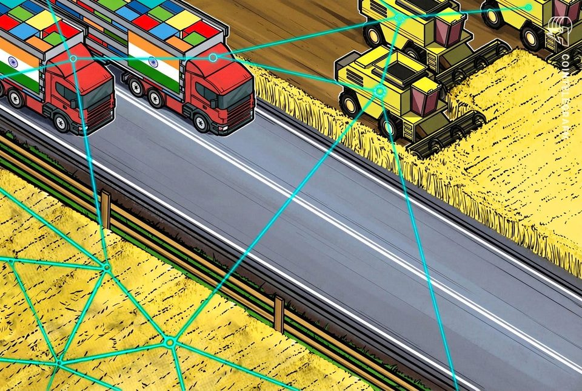
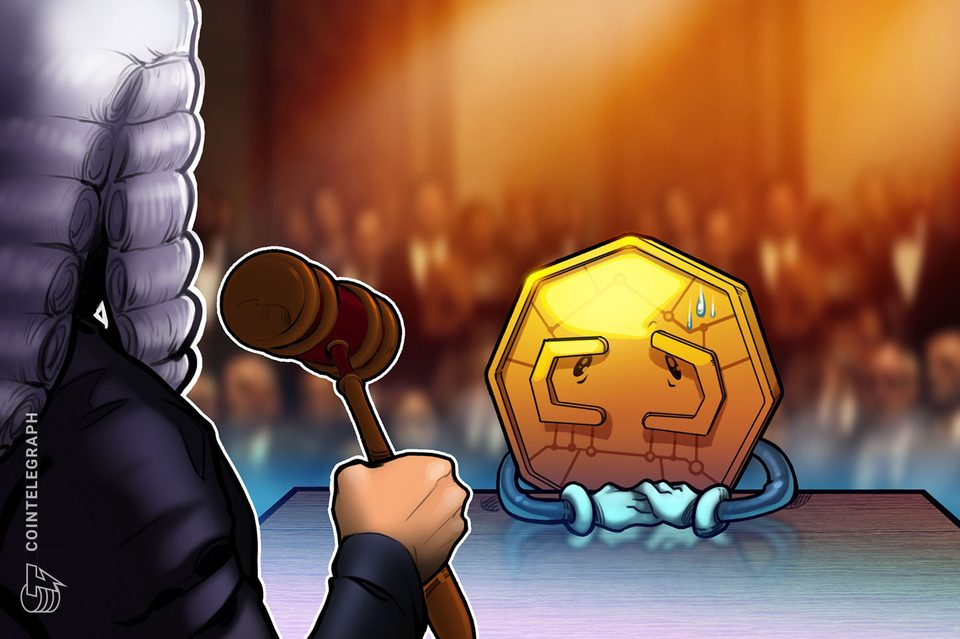
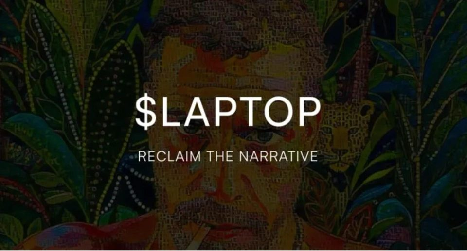

September 10, 2026
Daily headline set with source diversity, cleaned links, and local static rendering.
Paolo Ardoino says 650 million people decentralized US debt, but Tether still controls the T-bills
USDT spreads dollar claims and Treasury funding demand while Tether keeps reserve ownership, portfolio control and gains above face value. The post Paolo Ardoino says 650 million people decentralized US debt, but Tether...
Bitcoin sell-side risk returns to rare lows as $80K sellers fade from view
Bitcoin investors showed little sign of panic selling as BTC held most of its August gains and sell-side risk fell to rare lows, data showed.

Live updates: Bitcoin ETFs post a second straight outflow while other major funds turns green
Live updates: Bitcoin ETFs post a second straight outflow while other major funds turns green

Bitcoin Wallet Maker Trezor Says Hackers Breached Its Email Provider
The hardware wallet maker said a fake security alert claimed a hardware flaw could expose users’ recovery phrases.

Osmosis freezes 22.65 BTC after Nomic forwarding bug compromises Bitcoin reserves
Even full recovery of the frozen funds would leave roughly 17.19 BTC for the community pool to replace. The post Osmosis freezes 22.65 BTC after Nomic forwarding bug compromises Bitcoin reserves appeared first on...

India's Arya.ag to put grain ownership records on Avalanche
The system will combine farmer, grain, warehouse, insurance and loan data for lenders, though no launch date or initial deployment size was disclosed.
SGX's bitcoin and ether perpetual futures are now open to U.S. institutions
SGX's bitcoin and ether perpetual futures are now open to U.S. institutions

AI Is Solving Math's Best Problems Faster Than They Can Be Replaced, Terence Tao Warns
The Fields medalist points to a real race between OpenAI and Anthropic as proof: AI can now flatten a hard problem the moment someone starts working on it.
Tether is pushing USDT into a cracking $3 trillion Wall Street debt machine as defaults hit five-year highs at major funds
The USDT issuer will originate and advise on deals while Fasanara manages the $400 million-backed fund, which targets up to $3 billion from outside institutions. The post Tether is pushing USDT into a cracking $3...

Unicoin sues Uniswap Labs, seeks to cancel UNI registration
The complaint says Uniswap’s counsel sent three letters before Unicoin’s Sept. 28 launch and seeks declarations on its marks and domains.

Hunter Biden's LAPTOP blames bots after 98% crash as traders rack up six-figure losses
Hunter Biden's LAPTOP blames bots after 98% crash as traders rack up six-figure losses

Crypto, Banks Take Clarity Act Lobbying Fight to Senators' Home States
Crypto advocates and community bankers are targeting lawmakers in their home states as the Senate prepares for a September 15 procedural vote.